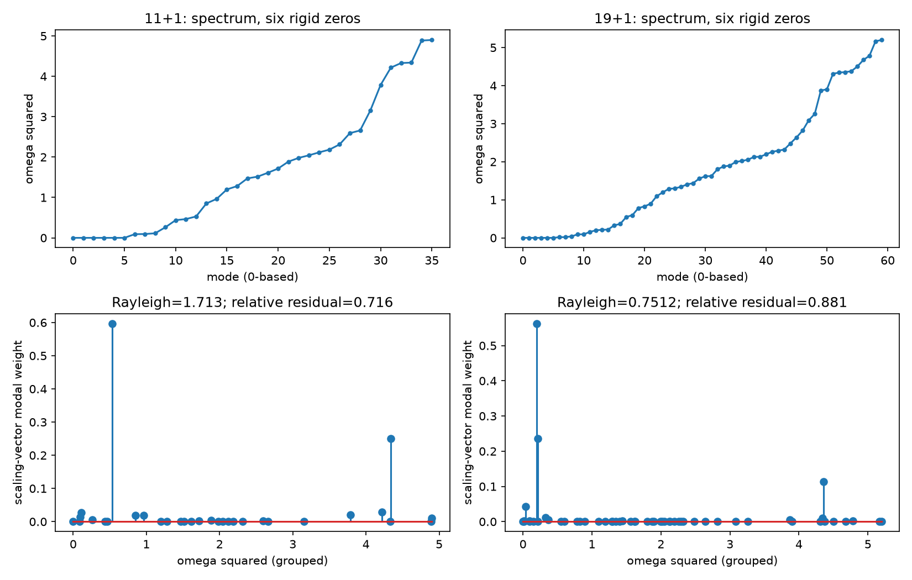

Berechnetes lineares Zentralfedermodell auf der .69. Zwei rekonstruierte Ketten, 12 und 20 Ecken. Kein Nachweis eines Teilchenmodells.
Sechs starre Nullmoden in beiden Ketten. Kleinste positive Kreisfrequenz: 0,30056 bzw. 0,13492 in Einheiten √(k/m). Grau: Gleichgewicht; Rot/Blau: gegenüberliegende Phasen. Die gezeichnete Auslenkung ist 100-fach vergrößert.

Oben: berechnete lineare Eigenmode. Der Punktzähler bleibt konstant, obwohl die Fläche variiert. Unten: vorgeschriebene gleichmäßige Skalierung als Messkontrolle; keine dynamisch nachgewiesene Atembahn.

Gleichmäßiges Aufblasen verteilt sich auf mehrere Eigenmoden. Ein vorgegebener Takt ist deshalb noch keine natürliche Schwingung der gesamten Kette.

Die geometrische Verteilung wurde außerdem über 128 bzw. 376 Orientierungszellen ausgewertet. Alle 172 Tetraederpaare bestehen die numerische Kontaktprüfung. Float64-Kontrollen ersetzen keine rigorosen Fehlergrenzen.
Ergebnisse und Grenzen · Mechanikdaten · Orientierungszellen · Geometrieprüfung